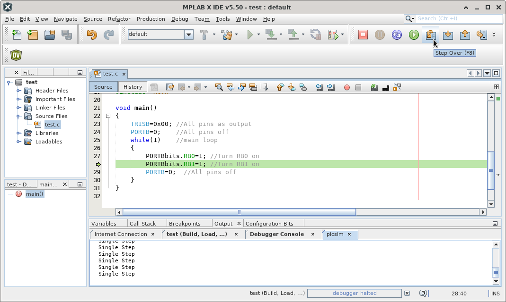
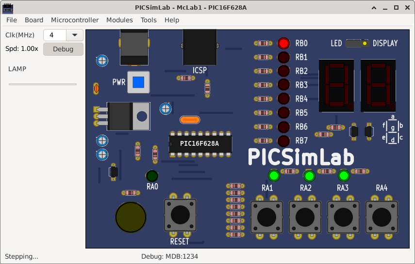
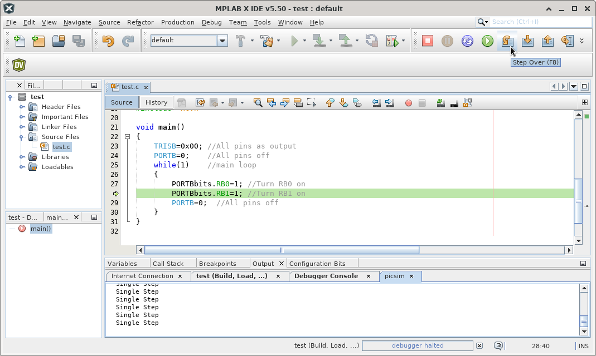
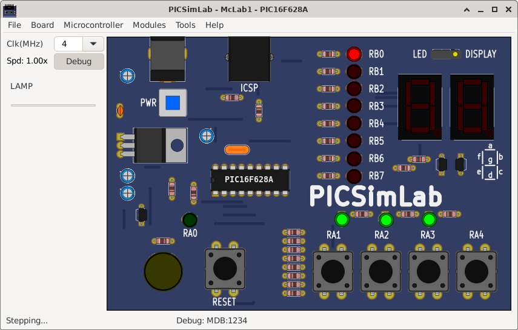

B.3.5 Running Step by Step
Use the Step or Step Over button to run the program step by step.

See in the PICsimLab the changes of each step.

Use the Step or Step Over button to run the program step by step.

See in the PICsimLab the changes of each step.
